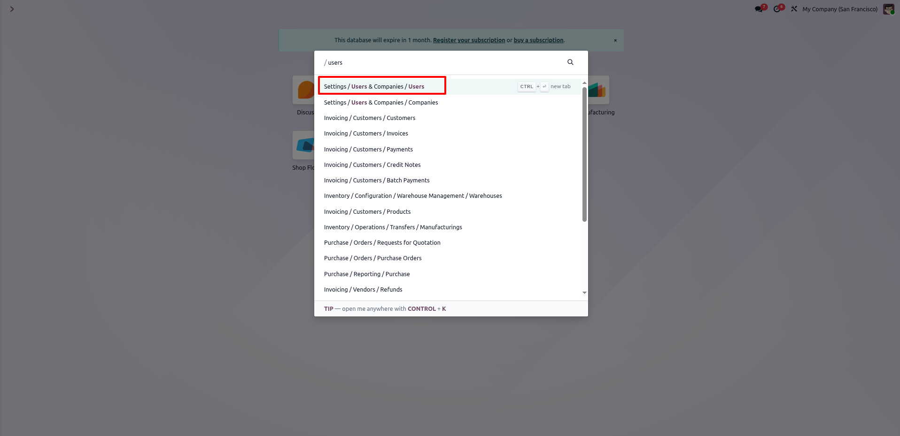
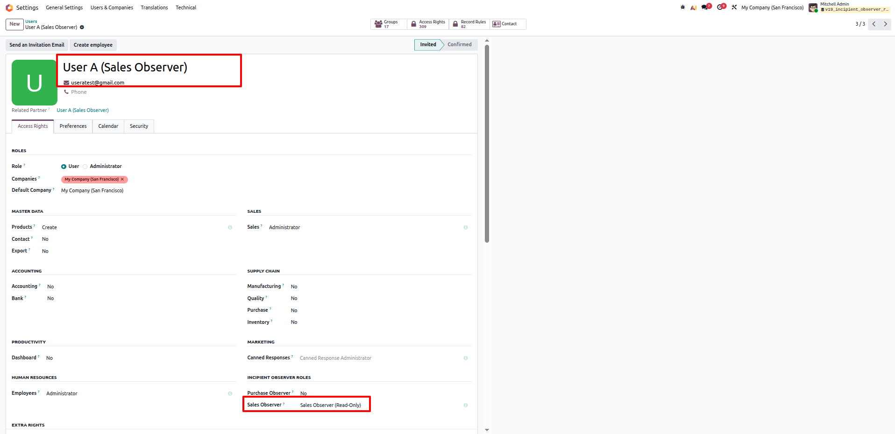
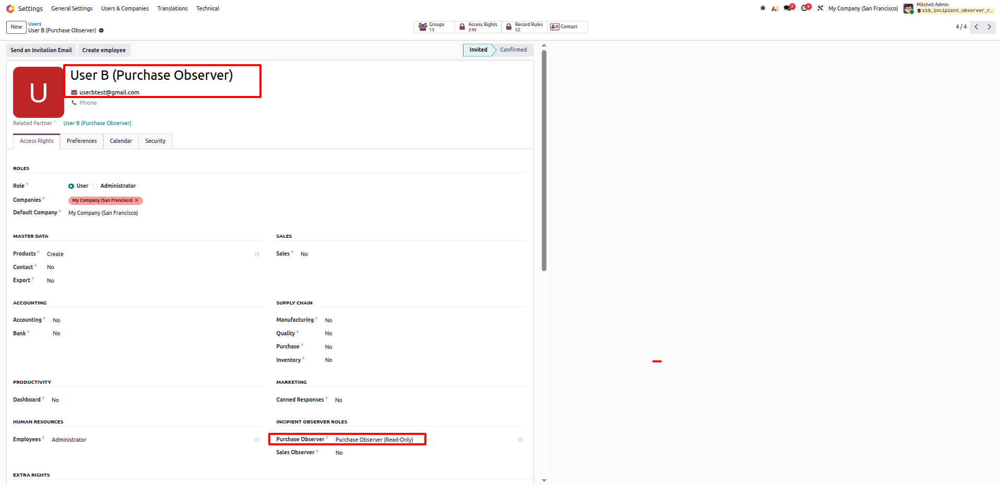
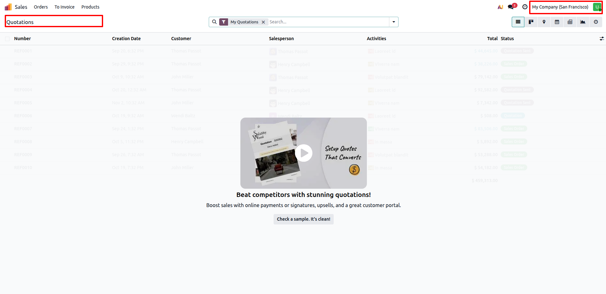
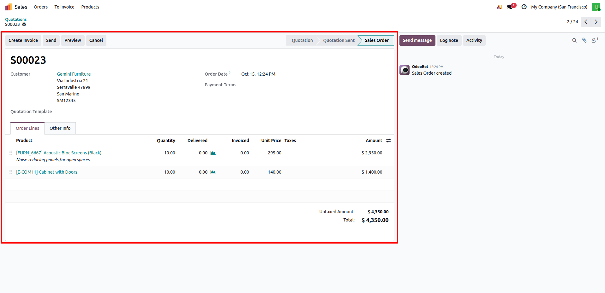
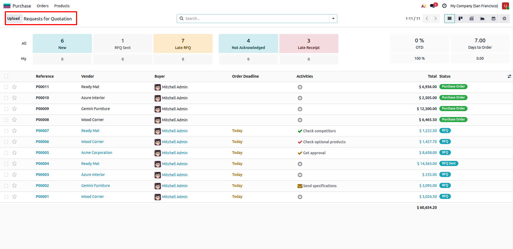
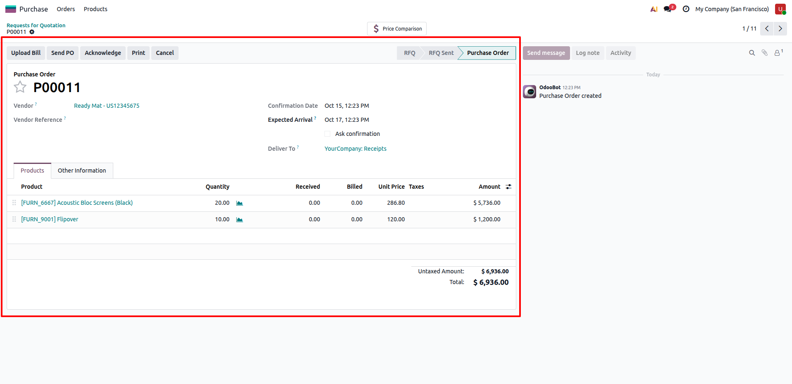

View-Only Observer Roles
Incipient Security SuiteView-Only Observer Roles for Sales & Purchase
Dedicated read-only auditor and observer security roles granting full visibility into Sales quotations, Purchase orders, deliveries, vendor bills, and BOMs with zero create, edit, or delete rights.
Need Setup Assistance?
Free pre-sales consultation and lifetime support for every installation.
Contact Technical SupportBuilt for Enterprise Security & Audit Compliance
Empower auditors, stakeholders, and reviewers with zero write risk
Zero-Mutation Access
100% Read-OnlyStrict security constraints eliminate create, edit, confirm, or delete capabilities across orders, lines, and related audit records.
Dual Security Groups
Sales & PurchaseDedicated independent roles for Sales Observer and Purchase Observer allow granular, isolated audit control per department.
360° Traceability
Stock, Bills & BOMsObservers maintain full read traceability across quotations, deliveries, receipts, invoices, vendor bills, and manufacturing BOMs.
The Security & Compliance Transformation
How View-Only Observer Roles solve standard Odoo security access limitations
Default Odoo Security Gaps
- ✕ Default Sales and Purchase "User" groups grant full edit and create rights, risking accidental changes.
- ✕ External auditors or internal reviewers cannot be given viewing rights without granting record modification access.
- ✕ Restricting access manually requires risky code overrides or complex access rule customizations prone to permission leaks.
Controlled Read-Only Access
- ✓ Pure read visibility into sales and purchasing records while strictly enforcing zero write/create/delete rights.
- ✓ Suppresses "New", "Create", and "Edit" buttons on UI and blocks backend ORM modifications via AccessError.
- ✓ Built on standard Odoo privileges (res.groups.privilege) and record rules with 100% framework compliance.
Comprehensive Security Feature Suite
12 Core capabilities engineered for audit compliance and secure inspection
Sales Order Read-Only
Full view visibility into quotations, confirmed sales orders, customer details, pricing, and tax lines without edit rights.
Purchase Order Read-Only
Complete audit access to RFQs, purchase orders, vendor terms, and procurement quantities with mutation locks.
Inventory Pickings & Move Lines
Auditors can inspect warehouse incoming receipts, outgoing delivery orders, and stock moves without validate permissions.
Invoicing & Bills Visibility
Cross-reference linked customer invoices, vendor bills, and journal move lines in strict read-only audit mode.
Bill of Materials (BOM) Access
Allows technical observers to review manufacturing BOMs and components associated with quoted products.
Strict ORM Access Rules
Enforces ir.model.access.csv and record rules to strictly reject any write, create, or unlink attempts with AccessError.
UI Mutation Suppression
Hides "New" and "Create" buttons from list views and disables inline editing across order tree and form views.
Spreadsheet & Reporting Audit
Supports read-only inspection of sales order spreadsheets and analytical reports for executive stakeholders.
Odoo 19 Privilege Architecture
Built leveraging Odoo 19's res.groups.privilege model for seamless security categorization and role assignment.
Multi-Company Isolation
Maintains strict company isolation so observers only audit transaction records belonging to their permitted companies.
Edition Compatibility
100% compatible with Odoo Community Edition, Enterprise Edition, and Odoo.sh cloud environments.
Zero External Dependencies
Pure native security XML and CSV configuration with zero third-party Python package requirements.
Step-by-Step Visual Walkthrough
How View-Only Observer Roles operate seamlessly in Odoo 19
User Security Group Assignment
Navigate to Settings → Users & Companies → Users to assign specialized read-only observer permissions.
Under the user profile's Access Rights, configure dedicated Incipient Observer Roles: select Sales Observer (Read-Only) or Purchase Observer (Read-Only) to grant audit visibility without standard write privileges.

Sales Observer Profile Configuration
Inspect and confirm the access rights setup for the dedicated Sales Observer user profile.
Standard Sales write/admin permissions are set to None, while Sales Observer (Read-Only) is enabled, granting viewing access to quotations, sales orders, linked deliveries, customer invoices, and BOMs.

Purchase Observer Profile Configuration
Inspect and verify the security group configuration for the procurement auditor user profile.
Standard Purchase user permissions are left unselected, while Purchase Observer (Read-Only) is activated, allowing audit oversight of RFQs, purchase orders, receipts, vendor bills, and related manufacturing BOMs.

Strict Access Error Enforcement on Unauthorized Actions
Backend ORM access rules strictly prevent unauthorized write, edit, or delete operations.
If an observer attempts to modify an existing order or perform restricted administrative operations, Odoo immediately raises an AccessError dialog, preventing any data manipulation or security breaches.

Sales Order Read-Only Verification
Logged in as the Sales Observer user, open sales orders (e.g., Quotations / Orders) in full read-only mode.
Customer information, order lines, unit pricing, taxes, and smart buttons are fully readable. Action buttons and "New" buttons are automatically suppressed so fields cannot be modified.

Purchase Order Modification Block & Access Warning
Strict record-level security safeguards ensure purchase transactions cannot be altered.
Any attempt by a Purchase Observer to confirm, edit order lines, update unit prices, or delete a purchase order is instantly blocked with a security warning, maintaining complete audit integrity.

Purchase Order Read-Only Audit Oversight
View complete procurement orders with full audit clarity across vendors, products, and order totals.
Auditors can inspect vendor details, scheduled delivery dates, purchase order line totals, and linked receipts/vendor bills without any ability to alter or create records.

Frequently Asked Questions
Click any question below to expand or collapse details